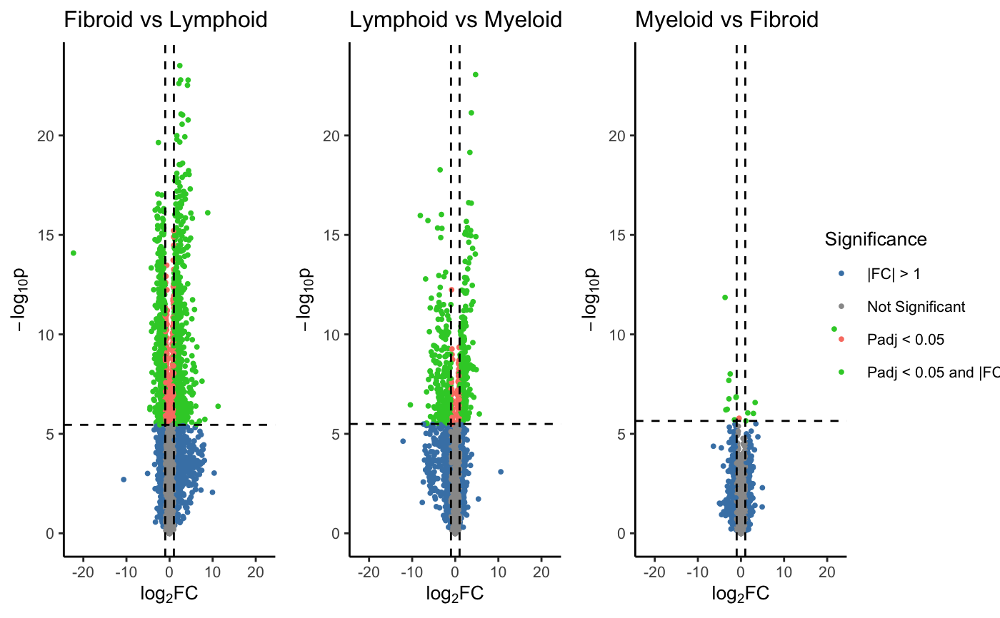

This function creates a volcano plot for all combinations of groups in a factor.
volcano_trio( dep, p_cutoff = 0.05, fc_cutoff = 1, label_rows = NULL, label_column = NULL, label_size = 3, text_size = 10, marker_size = 0.7, shared_legend_size = 1, sig_names = NULL, colours = c("grey60", "salmon", "steelblue", "limegreen"), fc_line = TRUE, p_line = TRUE, line_colours = c("black", "black"), share_axes = TRUE )
| dep | A dep object with the pvalues between groups of interest. Created
by |
|---|---|
| p_cutoff | The cut-off for pvalue significance (default = 0.05). |
| fc_cutoff | The cut-off for fold change significance (default = 1). |
| label_rows | Row IDs or rownames for values to be annotated/labelled (default = NULL). |
| label_column | The column ID or number to use as an annotation for label_rows values (default = NULL). If left as NULL, and label_rows is selected, the rownames of pvalues will be used. |
| label_size | The font size of labels (default = 3) |
| text_size | The font size of text (default = 10) |
| marker_size | The font size of markers (default = 0.7) |
| shared_legend_size | Size for the legend (default = 1). |
| sig_names | A character vector of labels to be used for:
non-significant; adjusted p < p_cutoff; |Fold Change| > fc_cutoff; and
finally adjusted p < p_cutoff.
default = p_cutoff & |Fold Change| > fc_cutoff markers
respectively.
(if NULL c('Not Significant', |
| colours | A character vector of colours to be used for non-significant; adjusted p < p_cutoff; |Fold Change| >, fc_cutoff; and adjusted p < p_cutoff. default = p_cutoff & |Fold Change| > fc_cutoff markers respectively (default = c('grey60', 'salmon', 'steelblue', 'limegreen')). |
| fc_line | Logical whether to add vertical dashed line at fc_cutoff (default = TRUE). |
| p_line | Logical whether to add horizontal dashed line at p_cutoff (default = TRUE). |
| line_colours | A character vector stating the colour of lines to be used for fc_line and p_line respectively (default = c('black', 'black')). |
| share_axes | Logical whether plots should share axes when plotted together. |
Returns a list of volcano plots. The first three elements contain comparisons between all combinations of the three levels in the comparison factor. The last element in the list is a combined figure for all three plots.
Lewis, Myles J., et al. (2019). Molecular portraits of early rheumatoid arthritis identify clinical and treatment response phenotypes. Cell reports, 28:9
data(syn_data) syn_p_obj <- create_dep(sampledata = syn_metadata, contrast = "Pathotype", pvalues = syn_pvalues, p_col_suffix="pvalue", fc_col_suffix = "log2FoldChange", multi_group_prefix = "LRT", expression=syn_rld) syn_mod_plots <- volcano_trio(dep=syn_p_obj) syn_mod_plots$Allsyn_mod_plots$`Lymphoid-Myeloid`#> NULL